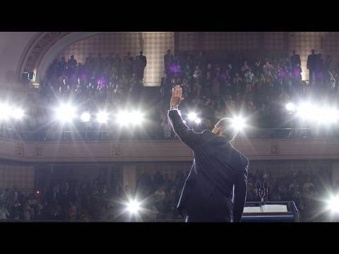
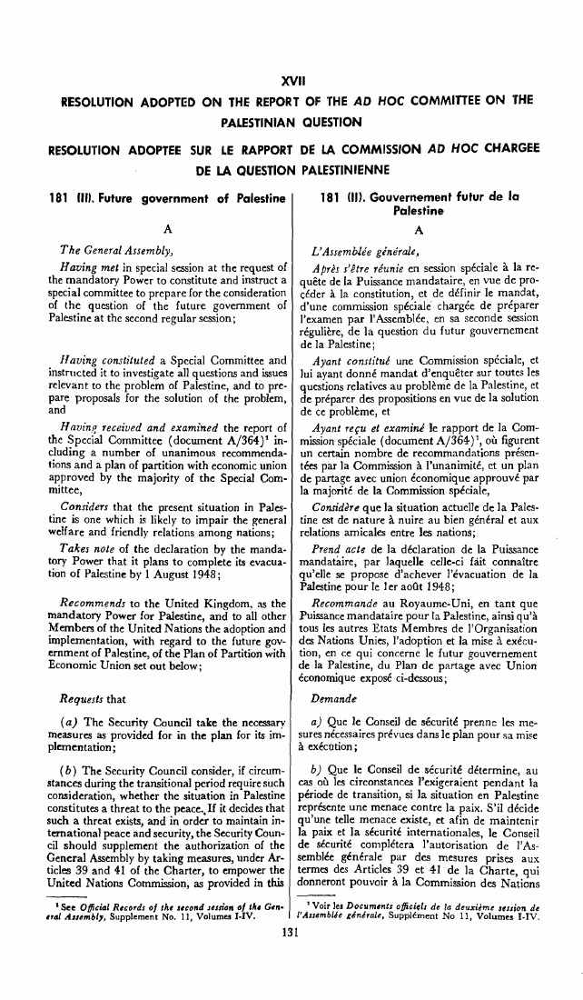
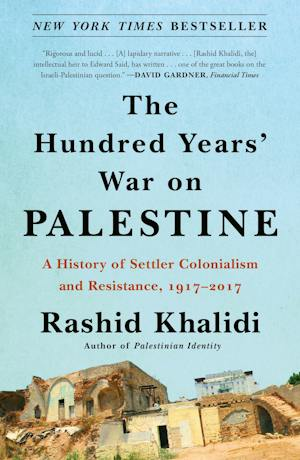

1:34:35 · 5 OPERE
Does the West Need a Palestinian State?
Il filo del discorso
Il conduttore e Chaim Noll, collegato da Israele, discutono l’utilità e la praticabilità di uno Stato palestinese a partire dall’articolo Does the West Need a Palestinian State?, pubblicato da Noll sullo European Conservative il 10 dicembre 2024. La conversazione si colloca verso la fine del dicembre 2024: la caduta di Assad e l’attacco al mercatino di Magdeburgo sono già avvenuti, mentre il ritorno di Trump alla Casa Bianca è ancora futuro e si scambiano auguri per il nuovo anno. Il giorno esatto non viene dichiarato. La tesi contraria alla statualità palestinese è la posizione argomentata dall’ospite, non un fatto giuridico reso vero dal titolo. La prima parte ricostruisce la lettura di Noll della crisi regionale. Gli attacchi dallo Yemen gli fanno indicare nell’Iran il centro di una rete di gruppi armati; Cina, Turchia, Qatar e Stati Uniti entrano nella discussione come potenze capaci di sostenerli o contenerli. Il rapporto commerciale e strategico sino-iraniano è distinto dalla prova di una direzione operativa di tutti gli attacchi. Le cifre su fondi sbloccati, contratti petroliferi e somme disponibili per le milizie sono accostate nel colloquio senza documentazione sufficiente a farne un bilancio verificato. Noll sostiene che Israele debba conservare maggiore autonomia dagli alleati, mentre il conduttore considera anche la Turchia una minaccia più rilevante di quanto l’ospite ritenga. Il contrasto con l’Europa introduce il caso irlandese. Nel dicembre 2024 fu Israele ad annunciare la chiusura della propria ambasciata a Dublino: ciò va distinto da una rottura delle relazioni diplomatiche, che l’Irlanda dichiarò sarebbero continuate, e dalla propria ambasciata in Israele, che non intendeva chiudere. Allo stesso modo, il riconoscimento irlandese, spagnolo e norvegese dello Stato di Palestina del maggio 2024 non può essere descritto come un evento ancora soltanto ipotetico. Riconoscimento internazionale, controllo effettivo del territorio e progetto di soluzione politica sono questioni connesse ma differenti. Noll presenta la reazione dei lettori della Neue Zürcher Zeitung a una precedente versione del suo articolo come un segnale di cambiamento. Dice di aver ricevuto circa trecento interventi e valuta favorevole circa la metà delle risposte. Il dato è un suo ricordo di un forum, non un sondaggio rappresentativo dell’opinione pubblica svizzera o europea. Il confronto fra Bild e altri giornali conduce alla critica dell’ambiente accademico e dei movimenti nei campus americani. Le minacce contro gli ebrei e le discriminazioni vanno condannate e accertate nei singoli casi; non ne segue che ogni critica politica a Israele, ogni bandiera palestinese o ogni sostenitore di uno Stato palestinese sia automaticamente antisemita. Finanziamenti esteri, responsabilità istituzionale e corruzione penale non sono sinonimi. La discussione sugli ostaggi apre un dissenso importante. Noll ipotizza che l’attesa di un’autorizzazione della Casa Bianca abbia contribuito ai ritardi israeliani del 7 ottobre. Il conduttore propone spiegazioni operative, legate alle informazioni e alla disposizione delle forze. La conversazione non presenta registri di comando o comunicazioni che dimostrino un ordine statunitense di bloccare la risposta: l’ipotesi non viene trasformata in responsabilità accertata di Biden. Anche i racconti su telefonate, generali intervenuti personalmente e tempi dei soccorsi richiedono documentazione distinta. La detenzione e la sorte degli ostaggi restano persone e fatti da considerare senza usarli come prova automatica di una teoria causale. Nel nucleo sulla statualità Noll ricostruisce la partizione del 1947, gli armistizi del 1949 e il controllo dei territori dopo il 1967. Occorre distinguere questa ricostruzione dalle sue conclusioni. La risoluzione 181 fu adottata dall’Assemblea generale delle Nazioni Unite, non emanata dagli Stati Uniti; il suo carattere di raccomandazione non rende inesistenti tutti i successivi diritti e atti internazionali. Lo status ONU di Stato osservatore non membro risale al 2012. Il parere consultivo della Corte internazionale di giustizia del luglio 2024 riguarda occupazione e autodeterminazione e non è una condanna penale: è distinto sia dal procedimento interstatale sul genocidio sia dalle indagini e dai mandati della Corte penale internazionale. La vittoria in guerra non trasferisce automaticamente la sovranità sui territori conquistati. L’ospite sostiene inoltre che molti palestinesi preferirebbero la cittadinanza israeliana a uno Stato proprio, invocando conversazioni personali e percentuali di due terzi o del 70% senza specificare il sondaggio. Queste cifre restano da documentare e non vengono rovesciate in una percentuale opposta inventata. L’interdipendenza economica, l’uso dello shekel e i problemi della dirigenza non equivalgono all’assenza di istituzioni o di identità nazionale. In particolare, le poste palestinesi sono documentate dall’Unione postale universale da molti anni; possedere un documento di viaggio non risolve da solo la questione della cittadinanza. Le posizioni dei diversi governi arabi, dell’Autorità palestinese e di Hamas non sono intercambiabili, né la popolazione civile può essere identificata con un’organizzazione armata. Il discorso di Obama al Cairo del 2009 fornisce un altro oggetto preciso di confronto. Noll lo interpreta come premessa di una politica sbagliata; il testo ufficiale, però, parla delle aspirazioni di entrambi i popoli, chiede ad Hamas di cessare la violenza e riconoscere Israele e afferma che il conflitto non deve distrarre i governi arabi dagli altri problemi. La critica alla sua efficacia politica va distinta da una descrizione che gli attribuisca ogni causa della crisi regionale. Analogamente, il richiamo a The Hundred Years’ War on Palestine di Rashid Khalidi è una condanna del libro da parte degli interlocutori, non una sua analisi completa o una qualificazione storiografica già dimostrata. Nella conclusione Noll descrive la sofferenza dei civili di Gaza e dei familiari dei combattenti israeliani, pur giudicando favorevolmente l’esito militare per Israele. La sua fiducia nella nuova amministrazione americana è una previsione del dicembre 2024: non viene confermata retroattivamente mediante eventi successivi. I giudizi su governi, religioni e media restano attribuiti; le espressioni di follia o alterazione psicologica non sono diagnosi. Il punto che il colloquio lascia al lettore è il contrasto fra una critica politica della soluzione dei due Stati e la necessità di verificare separatamente i fatti, i diritti, le preferenze delle popolazioni e le condizioni materiali da cui qualsiasi soluzione dovrebbe partire.
I libri nel discorso

Politica
Identificazione probabile
Copertina: Bompiani · Testi a fronte, 2016 · a cura di Federico Ferri
Immagine autentica dell’opera, controllata visivamente; l’edizione di riferimento non è attribuita al filmato.
il conduttore ricorda alternativamente Plato or Aristotle sul motivo per cui il tiranno predilige elementi stranieri nella società. Titolo e capitolo non detti. Politica V,11 presenta una corrispondenza specifica: il tiranno preferisce compagni e commensali stranieri ai cittadini perché non competono con lui per il potere.
Passaggio 20:51 ↗ · Fonti e libro ↗Does the West Need a Palestinian State?
Copertina: Fotografia editoriale associata all’articolo originale, The European Conservative, 10 dicembre 2024
Immagine autentica fornita nella pagina dell’articolo: scarpa con scritta Free Palestine davanti a un cartello. È una fotografia illustrativa editoriale, non copertina, prima pagina, facsimile del testo o ritratto dell’autore; non prova eventi narrati. Nessuna ricostruzione grafica.
Riferimento ricavato dalla trascrizione automatica.
Passaggio 21:13 ↗ · Fonti e libro ↗
A New Beginning — Remarks by the President at Cairo University
Copertina: Casa Bianca, miniatura documentaria associata alla pagina ufficiale A New Beginning, Cairo 4 giugno 2009
Immagine autentica archiviata dalla Casa Bianca e associata alla pagina ufficiale del discorso: Obama di spalle saluta nell’aula affollata, con flash e leggio. È miniatura documentaria di un intervento audiovisivo, non copertina di libro, prima pagina o trascrizione illustrata. Non è usata come prova delle valutazioni politiche nel video.
Riferimento ricavato dalla trascrizione automatica.
Passaggio 1:02:13 ↗ · Fonti e libro ↗
Future Government of Palestine — Risoluzione 181(II) e piano di partizione
Prima pagina della risoluzione: Adottata il 29 novembre 1947, 128ª seduta plenaria; riproduzione ufficiale bilingue inglese/francese, pagina iniziale 131, con piano allegato.
Rendering della prima pagina del PDF ONU, pagina 131 della raccolta, con testo bilingue inglese e francese. Non è una copertina libraria. Il piano prevedeva due Stati e un regime speciale per Gerusalemme; non viene confuso con i confini successivi alle guerre.
Riferimento ricavato dalla trascrizione automatica.
Passaggio 1:03:56 ↗ · Fonti e libro ↗
The Hundred Years’ War on Palestine
Copertina: Metropolitan Books, trade paperback 26 gennaio 2021, ISBN 9781250787651
Copertina autentica Macmillan della stessa opera: titolo, autore, sottotitolo 1917–2017 e immagine delle rovine leggibili. Edizione paperback 2021, non attribuita al volume nella fotografia di Biden o al relatore. Opera originariamente pubblicata nel 2020; nessun giudizio di correttezza storiografica dedotto dalla copertina.
Riferimento ricavato dalla trascrizione automatica.
Passaggio 1:19:52 ↗ · Fonti e libro ↗